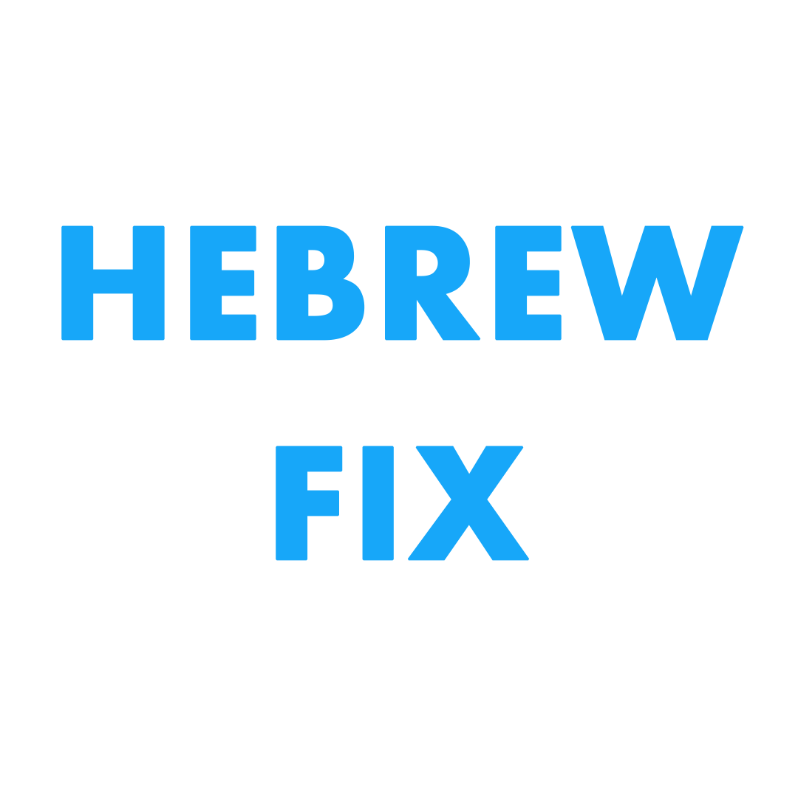
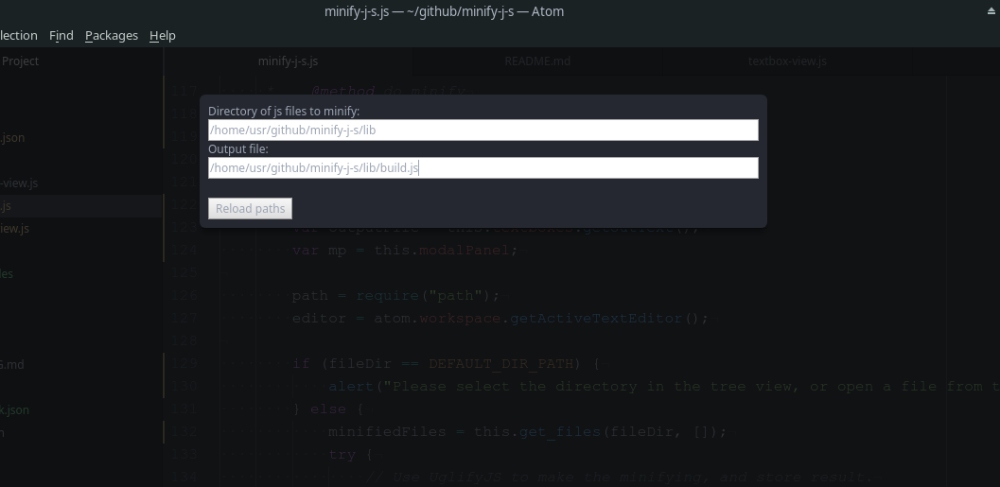
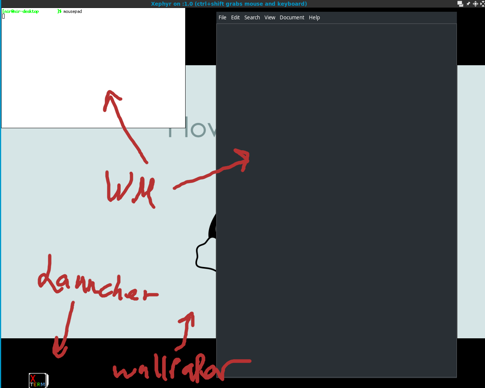
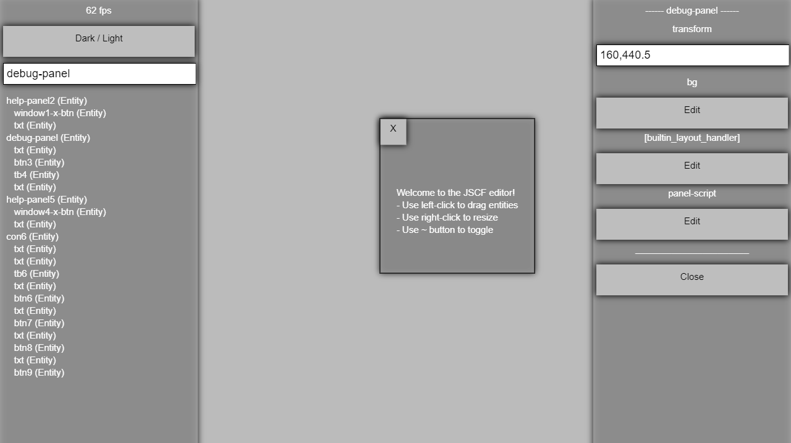
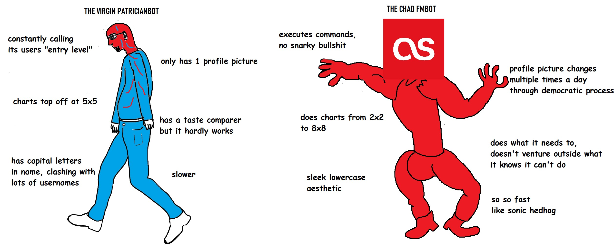
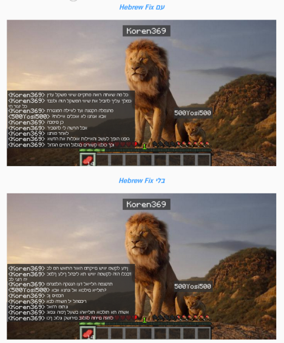

Here you can find about my projects, links, news and more!
SF
News
University studies - as studying for my degree demands more and more of my time I have stalled progress on most of my projects for now.
Sep 02 2020
Froze Lavinder, the ambitious project will be split into simpler projects in the future.
Bounty hunting - doing some bounty hunting.
Dropped IRCv3, no longer active in the project because of difference in interests.
Focusing on Lavinder, a new desktop environment I work on with ruapotato.
Most of my personal projects are stalled, now focusing on other open source projects:
- IRCv3 specs
- Several discord bots
- QtLavinder an experimental desktop environment by me and HackersGame.
- Quickey is an experimental easy to write & decode textual music language to pass on text channels.
- JSCF's development is stalled
- PTFTP's website is no longer active. Visit github instead.
- duborsub (closed source) is no longer active. If you need it it's still hosted on a slow service: [Visit here].
Oct 28 2018
Oct 27 2018
July 21 2018
July 21 2018
July 18 2018
Projects
Contributions
My Own Stuff
HebrewFix

Probably the most popular israeli plugin for minecraft servers.
[source]
Minify-j-s

a simple plugin for the atom editor, for minifying multiple js files at once.
[package+src]
CuteDE

Skeleton desktop environment in python. (Open Source)
Featured in nixers newsletter.
[Github repo]
JSCF

JavaScript Canvas Framework. (Open Source)
Still in development & looking for contributors.
[Github repo] |
[Project wiki]
Archive
Simple NN - 4 day project of making neural network framework.
[Github repo]
LWJGL2DE - 2D Java LWJGL game engine.
[Github repo]
Failed passion projects
The White World
Bringing the first Israeli VN to life as a teen. (estimated 100 plays)
I managed ~8 anonimous volunteers at a time. while the result wasn't
great, it was a very enjoyable challenge.
[archive]
C++ & DirectX & WinAPI shenanigans
In high school I was making C++/DX engines
and gui apps hardcoded via WinAPI and other low level fun.
I made a few games and demos using it.
[github archive]
Game Jams
I participated in LudumDare compo for several years.
I'll spare you my old profile, some of the games i made as a teen.
[profile]
My favorite section
Fan Memes

FMBot. meme made from back when I was pretty active and made some performance improvements.

Hebrewfix. Zoomers can make a meme on the simplest of software.
About
Press
Nixers #89 - feature of my article about making a DE.
Contact
Email - go.prodml@gmail.com